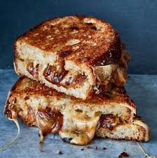

Here is a recipe on how to make my classic grilled cheese:

Description:
This grilled cheese is excellent. I have been making it as a snack for many years. It's quick, and when done correctly, tastes incredible.
Ingredients:
- 2 slices of bread
- As much gruyere cheese as your heart desires
- A quarter of an onion
- Half stick of butter
Instructions:
- Dice up the onion
- Heat up the pan at around medium levels
- Once heated, place butter in the pan
- After butter melts, place bread in pan individually for about a minute to sear
- Remove bread, assemble grilled cheese without onions
- Place grilled cheese in pan for 4 minutes, then flip
- Use roof on pan to melt cheese
- Place onions inside grilled cheese
- Place one slice of each on the outside of both slices of bread to achieve a cheesy crust
- Sear both sides in pan for 2 minutes on high heat
- Remove and let it sit on a plate for 2 minutes
- Enjoy!